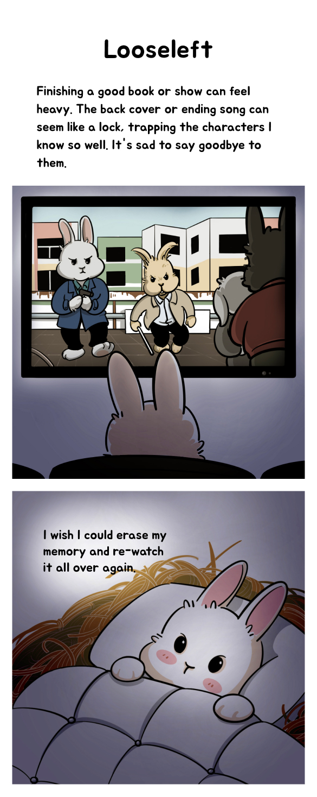
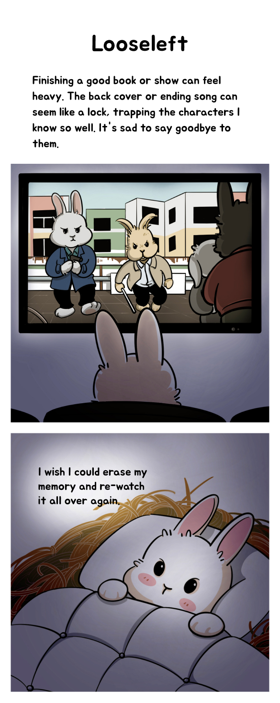
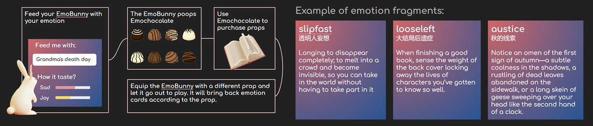
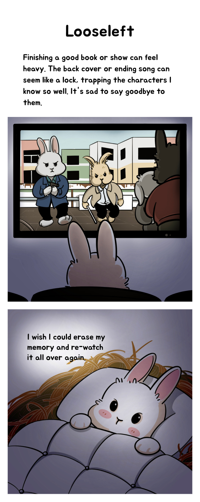

February 2023 ~ May 2023
"Bunny Mood" is an emotion recording app that helps East Asian teenagers improve their emotional well-being through gamified journaling.
This is my independent graduation project, for which I handled all tasks, including user research, game design, user testing, prototyping, 3D modeling, interaction design and visual design, under the guidance of Jess Irish, Ethan Silverman, and David Carroll
Figma, Unity, Blender
My primary goal is to engage East Asian juveniles who grow up in a test-oriented educational environment that neglects social-emotional learning, fostering their understanding and acknowledgment of emotions.
Additionally, I strive to captivate the existing users of emotional journaling products by providing a juicier experience to nudge continued journaling.
I enhances the emotion-tracking process by integrating stress-free journaling and highly-customizable features in engaging and intuitive gameplay.

At our pop-up Thesis Show, I showcased "Bunny Mood" to the public to evaluate its effectiveness. I garnered positive feedback from audiences of diverse age groups and cultural backgrounds, despite my primary focus on East Asian juveniles.

This is the preview version of "Bunny Mood" showcased at the Parsons "Entropy" 2023 Thesis Pop-up Show


Renowned scholar Susan David, known for her work in emotion theory, coined the term "Emotional Agility."
In her talk, she explores the transformative strategies of emotional agility, which involves understanding, accepting, and practicing self-care to our emotions. She also delves into how improving emotional agility benefits our actions, careers, relationships, health, and overall well-being.
Susan David’s research provides a theoretical endorsement for the value of "Bunny Mood".
My initial design prompt is "Design SOMETHING for East Asian youth to improve their 'Emotional Agility'."
But I am not sure what on earth is "SOMETHING".
Therefore, I prototyped some ideas, and gain critique through testing, presentations, workshop, peer review, and expert review to clarify my design prompt in the begining.


Idea 1 & 2 & 3: Visualize the emotion-related physiological data
✔ Externalizing and substantializing self-emotions can help in accepting and controlling them.
✘ The immaturity of emotion detection technology
✘ Emotion detection technology is morally debatable
Idea 4: Visualize emotions into VR experiences, constituting a VR museum of emotions
← I created the "anxiety" experience as an example
✘ Hard to interpret
✘ Not everyone has a VR device

Idea 5: A business simulation game where you sell "Emotion-chocolate" generated from a monster
Players feed a monster with facial expressions, and the monster poops chocolates. Each chocolate contains a detailed and context-based emotion, helping to enhance emotional granularity.
An example of "Emotion-chocolate" named Defensiveness: A knee-jerk territorial reaction when a friend displays a casual interest in one of my obsessions.
✔ Test participants enjoy reading detailed and context-based description about emotions.
✔ Externalizing and substantializing self-emotions as chocolate can help in accepting and controlling them.
✔ The juvenile humor of monster pooping "Emotion-chocolate" is intriguing for youth.
✘ Emotions were superficially incorporated. For example, "Emotion-chocolate" could be easily replaced with "Math-chocolate," turning the game into a Mathematics Educational Game.
✘ The business game mechanism urged players to prioritize making money instead of caring about self-emotions.
Idea 6: Emotional monster battle board game for two players.
Players allocate three types of tokens that represent frequency, pleasantness, and negativity to monster cards that represent different emotions, and then engage in battles using the monster cards.

✔ The process of allocating tokens is a form of self-emotional analysis that enhances emotional awareness.
✔ Test participants enjoy reading detailed and context-based description about emotions.
✔ Externalizing and substantializing self-emotions as monsters can help in accepting and controlling them.
✘ Board games are played occasionally, but true improvement in mental health requires long-term interventions.
✘ The combat mechanism urged players to prioritize winning instead of caring about self-emotions.
Idea 7: The multiplayer board game, EmoTown.

✔ The process of allocating tokens and placing cards is a form of self-emotional analysis that enhances emotional awareness.
✔ Test participants enjoy reading detailed and context-based description about emotions, and check how other players allocate tokens and place cards.
✔ Externalizing and substantializing self-emotions as cards can help in accepting and controlling them.
✘ Board games are played occasionally, but true improvement in mental health requires long-term interventions.
✘ The combat mechanism urged players to prioritize winning instead of caring about self-emotions.
✘ The rules are too complex for non-gamers.
✘ The game duration is too long, with each round taking 40 minutes.
The final idea of Bunny Mood: An pet game that playfully encourages you to log your emotions, gradually took shape in the process.
✔ The feeding process is a form of self-emotional check-in that enhances emotional awareness.
✔ Test participants enjoy reading the emotion fragments.
✔ The juvenile humor of pooping "Emotion-chocolate" is intriguing for youth.
✔ Pet game mechanic is easy to understand for everyone, and the healing sensation of pet ownership perfectly aligns with the theme of emotion and my motivation.
✔ Externalizing and substantializing self-emotions into bunny droppings helps players digest and accept their emotions.
✔ A single-player, non-competitive mechanic that can be started and ended at any time.
✔ Using a bunny as the main character can help avoid reinforcing negative stereotypes and gender roles
✔ Logging emotions and doing emotion check-ins are commonly used techniques in therapy and social-emotional learning to enhance emotion agility, as evidenced by practice.
Detailed documentation of the initial ideation process↗
Bunny Mood's most direct competitors are those emotion journaling applications.

However, since Bunny Mood falls into the overlapping domains of casual gaming, Social-emotional learning (SEL), and digital therapeutics (healthcare) industry, there are some products that offer similar experiences or functionalities.


Target participant characteristics:
Random participants:
Given BunnyMood's emphasis on gaming elements rather than solely functional features, I believe that my user base extends beyond the primary target audience. Like how cartoon cater primarily to children but also resonate with adults. To ensure a comprehensive understanding, I also conducted interviews with individuals randomly selected from diverse demographics.
I intentionally recruited participants in my personal network rather than strangers to establish a connection between their personalities and their answers, enabling a more comprehensive analysis of the outcomes.


Reviews on the Apple Store provide an additional resource for user research.

Which individuals are more inclined to be attracted to this product?

Which groups might require some effort to win them over?

Feedback delay is the top reason why users quit an emotion journal product.
Users mainly find joy in revisiting old emotion journals, but it takes time to accumulate enough entries. Journaling regularly is challenging, and missing several days often leads to abandonment.

Factors that contribute to users' continued engagement:
Features that users have different preferences and tastes:
There are 3 types of emotion journal tools in the current market: physical products, digital applications, and the indirect type involving some social interactions.

These applications usually go beyond basic mood logging and visualization, incorporating more features to enhance the user experience. Among the emotion journal applications that have more than 500 ratings on the Apple store, I choose 9 of them to analyze.


I have chosen young individuals, approximately 14 to 25 years old, who have little to no experience with emotion-tracking software, lack social-emotional learning, and may be facing emotional challenges, as my primary target audience. Because I find this group of individuals is the one that most needs to be empowered by Social Emotional Learning.


Secondary personas are existing or former users of emotion-tracking software seeking a superior tool. They can be categorized based on their emotional tracking goals:
1. Those who rely on such products to maintain their mental well-being.

2. Those who use them for personal growth and memory preservation.

All three personas are Chinese to ensure a specific cultural focus for game content creation.


Four types of bunny food were introduced in the final design: emo-ball, emo-soup, emo-salad, and emo-burger. They cater to different logging habits, facilitating diverse perspectives in analyzing and understanding emotions.

The emo-ball is the most convenient option for creating food. You can record your emotions by drawing expressive visuals and providing accompanying text descriptions.

Emo-soup enhances understanding of complex emotions. Assign a name and select fundamental emotions for a comprehensive experience..

In an emo-burger, you can upload media files to capture and preserve emotions vividly.
Emo-salad promotes non-judgmental analysis of emotions. Name and tag your emotions to explore underlying causes and develop effective strategies. Aligned with therapist techniques and social emotional learning.

Some food items have a numbered display representing raw materials. If you run out, you can't make that food unless you purchase materials from the shop using in-game currency. Emo-ball is an exception and doesn't require raw materials.
Raw food materials serve two purposes:
1. Accommodates different recording preferences of players. Unlocking different feeding panels through the purchase of raw food materials allows players with specific recording habits to choose the method that suits them best.
2. Serve as consumable items, preventing the game loop from being disrupted. If there were no consumable items and players had already purchased all available items from the shop, collecting emo-chocolates would become pointless. The inclusion of raw food materials maintains the game's flow.
The current version includes 3 types of raw food materials, with the potential for more varieties in future updates.
Your bunny needs to eat daily to go out and play. Eating more food increases the chance of finding emotional fragments. If you forget to feed your bunny for more than three days, it goes into a dormant state. Feeding it for three consecutive days will reactivate it, but don't worry, the bunny won't die. Ensuring a positive and uplifting experience is important in my game.
Besides raw food materials, players can utilize emo-chocolates to purchase items in the other three categories: articles, clothes, and furniture.

Players can buy clothes for their bunnies, affecting their destinations. For instance, a swimsuit may bring back emotions from the swimming pool. This adds depth and customization to the game.

Articles influence the bunny's activity in the emotion fragment. For example, giving the bunny a ticket may result in an emotion fragment depicting it holding the ticket and taking a train.

When Bunny is away, you can place articles in the room for it to pack upon returning. If Bunny is at home, you can also put articles directly into its backpack.

Integrating features into furniture allows for customization and a richer shopping experience. It also enables the addition of new features in the future.

Code case: Reserve food for a specific bunny visitor. Magic box: Sell items Potty: Automatically collect emo-chocolate. Board: Check feeding records. ... Place furniture in the room and tap to use its functions in an augmented reality (AR) environment.


When the bunny back home, it may bring you an emotion fragment. Collect the emotion fragments to compose a manga story that depicts a context-based emotion from the bunny.

Once you have completed a manga story, you can rate this emotion based on how often and strong you feel this, from 0~5.
Incorporating social features into the final design, the mailbox icon serves as the portal to various social functions.

If you and your friend both rate the same manga with the same score on the same day, triggering the "Feel link", both of you will be rewarded with emo-chocolate.
You will receive emotion fragments from your friends and you can also give yours to them.

You can designate friends as "co-feeders", whose bunnies may visit your homes and eat your food, or vice versa if you forget to feed your bunny.


The above information is about Bunny Mood's UX/UI design. I am currently working with a team of programmers to further develop the game in Unity, while I also continue to create the manga content within it. Updates for the bunny manga will be regularly posted on this website and my Instagram page.
